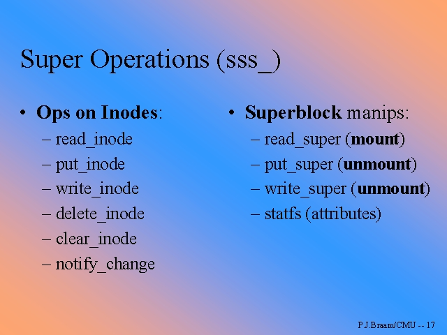
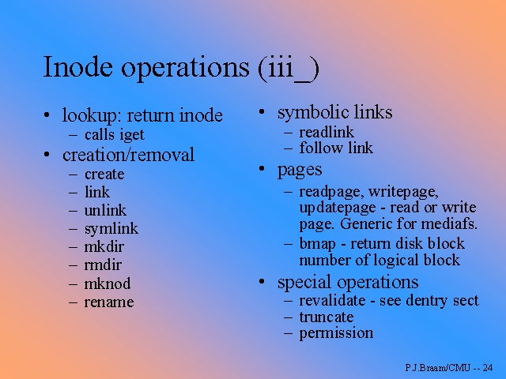

El sistema de ficheros virtual (VFS) de Linux (II)
Autor: Juan Antonio Martínez Castaño
E-mail:
jantonio@dit.upm.es
Web:
http://www.dit.upm.es/~jantonio
Copyright
Este artículo es Copyright 1999 de Juan Antonio Martínez Castaño y se
distribuye bajo las siguientes condiciones:
- Su distribución mediante medios electrónicos es libre, siempre y
cuando se conserve el texto íntegro y en su formato HTML original, haciendo
especial mención a la conservación del mensaje de copyright
- El autor y dueño del copyright cede los derechos de publicación impresa
a Prensa Técnica S.L., autorizando a ésta a realizar las modificaciones al
texto que considere oportunas para su publicación
- La distribución o copia, total o parcial, en cualquier medio impreso por
parte ajena a Prensa Técnica S.L. Está expresamente prohibida
- Ningún particular podrá publicar este fichero en un servidor Web de acceso
público sin el consentimiento expreso del autor y de Prensa Técnica S.L.
Indice
Entradilla
Continuando con la serie dedicada al Linux Virtual File System, vamos a
estudiar en esta entrega el funcionamiento del VFS, desde el procedimiento de
montaje hasta como se llega a las funciones de E/S sobre el dispositivo
Presentación
En el número Anterior de Linux Actual, se procedió a describir el por qué de
la existencia del Sistema de Ficheros Virtual de Linux, elementos de que
contaba un filesystem, y la operación de registro de un sistema
de ficheros en el núcleo. En este artículo, continuando la serie, vamos a
describir el proceso de montaje y desmontaje, y los diversos mecanismos de que
Linux se vale para navegar a través del sistema de ficheros
Introducción
Hagamos un pequeño resumen de la entrega anterior:
- El Sistema de Ficheros Virtual de Linux es una capa que utiliza el núcleo
Linux para abstraer y uniformizar el acceso a los diferentes tipos de
sistemas de ficheros. En un lenguaje orientado a objetos, podemos decir
que el VFS es una clase, y cada sistema de ficheros una clase derivada.
Del mismo modo, cada sistema de ficheros montado se puede considerar como
una instancia de alguna de las subclases de sistemas de ficheros
|
El Sistema de Ficheros Virtual de Linux es una capa que utiliza el núcleo
Linux para abstraer y uniformizar el acceso a los diferentes tipos de
sistemas de ficheros.
|
|---|
| | |
- Esta jerarquía se muestra en el núcleo Linux en forma de arrays de punteros
a funciones. Dichos arrays son rellenados con los datos correctos en
función de cada sistema de ficheros
- Para que Linux pueda utilizar un sistema de ficheros, es precisa la
operación de registro, por la que el sistema de ficheros es
añadido a la lista de fs reconocidos por el núcleo, a la vez que se le
informa al núcleo del punto de entrada del manejador del sistema de
ficheros
- En un sistema de ficheros distinguimos tres estructuras de datos
fundamentales: Superbloques, inodos, y ficheros. Los primeros contienen
los datos esenciales de cada sistema de ficheros montado, así como los
manejadores de entrada a dicho sistema de ficheros. Los inodos contienen
información sobre cada entrada de datos del sistema de ficheros, tipo,
permiso, propietario, tamaño, fechas, punteros a los bloques de datos...
Los ficheros no son sino secuencias de bloques que contienen los datos
referenciados por un inodo
- Los directorios no son sino ficheros que contienen una tabla de
asociaciones nombre-inodo
- Existe un último elemento, denominado el "kernel caché", manejado
directamente desde el VFS. En la versión 2.2 del núcleo, distinguimos
caché de inodos, de directorios y de bloques. Existen a su vez cachés
diferentes para lectura y escritura
Antes de seguir, es recomendable que el lector tenga a mano el número
anterior de Linux Actual, y repase cuidadosamente las estructuras de datos
y operaciones de registro de sistemas de ficheros descritos en él. En el CD-Rom
que se acompaña a la revista se incluye la documentación existente en la
actualizad sobre el VFS, así como diversos ejemplos de sistemas de ficheros,
alguno de ellos desarrollado por el autor. Donde sea posible, se remitirá al
código fuente del núcleo Linux, utilizándose -a menos que se diga lo contrario-
la versión 2.12 del núcleo Linux
Una vez preparados, podemos continuar:
La operación de montaje
La operación siguiente a la del registro del sistema de ficheros es la de
montaje. la operación de montaje se realiza de la siguiente manera
- La llamada al sistema mount() comprueba primero los permisos
y que la operación puede ser realizada
- A continuación se busca en la lista de sistemas de ficheros registrados
el tipo especificado. En el caso de que no se encuentre registrado, se
busca el módulo cargable correspondiente a dicho sistema de ficheros y
se procede a su carga y registro. En caso de no encontrar dicho fs
se genera un informe de error
- El VFS crea una estructura de datos correspondiente a un nuevo
superbloque, rellenando los campos correspondientes al inodo padre,
puntos de montaje, permisos, etc.
- El VFS llama a la rutina read_super() del sistema de ficheros
correspondiente, pasando como parámetro la nueva estructura de datos
creada. read_super() completa la estructura de datos, inicializa
punteros y demás estructuras necesarias de la nueva entrada del sistema
de ficheros. La principal estructura es el puntero a la lista de
operaciones con el superbloque.
A la hora de programar filesystems, es necesario recordar que
no podemos hacer suposiciones sobre el punto de montaje: el núcleo
genera una estructura superbloque por cada punto de montaje de cada
sistema de ficheros. todos los superbloques correspondientes a un
sistema de ficheros dados se inicializan desde la rutina
read_super() siendo la única diferencia, el puntero a la
estructura superbloque pasada en cada llamada
- Una vez inicializada la estructura, read_super() retorna, bien
un puntero a la estructura superbloque recibida, o bien NULL
indicando el error
|
Con la operación mount() cada sistema de ficheros personaliza un
filesystem dado en una instancia del mismo
|
|---|
| | |
Echemos un vistazo a la lista de operaciones que se pueden realizar
con el superbloque. Recordemos que el superbloque suele contener información
sobre el sistema de ficheros, punteros a los inodos, etc. Del mismo modo
debe contener los métodos de acceso al inodo raíz del sistema de ficheros.
Lo usual es que las operaciones sobre el inodo raíz sean ligeramente
distintas a las del resto de los inodos ( pues intervienen punteros al
superbloque, así como a estructuras ajenas al sistema de ficheros ). Por ello
es normal que existan una familia de inode_operations y de
root_inode_operations. El listado 1 ilustra la lista de operaciones
sobre el superbloque:
struct super_operations {
void (*read_inode) (struct inode *);
void (*write_inode) (struct inode *);
void (*put_inode) (struct inode *);
void (*delete_inode) (struct inode *);
int (*notify_change) (struct dentry *, struct iattr *);
void (*put_super) (struct super_block *);
void (*write_super) (struct super_block *);
int (*statfs) (struct super_block *, struct statfs *, int);
int (*remount_fs) (struct super_block *, int *, char *);
void (*clear_inode) (struct inode *);
void (*umount_begin) (struct super_block *);
};
|
| Listado 1: Operaciones sobre el superbloque |
|---|
Distinguimos entre operaciones sobre el inodos y sobre el superbloque.
todas las operaciones sobre inodos y ficheros pasan por la lectura
de los datos del inodo. Para ello, existen una serie de entradas en la lista
de operaciones sobre el superbloque, que permiten la lectura, escritura,
asignación o liberación de inodos. La estructura inode que el VFS pasa al
superbloque contiene información sobre el inodo deseado. Un inodo especial
es el inodo raíz, o root_inode
Recordemos que en el 99% de los casos, el inodo raíz corresponde casi siempre
a un directorio, denominado directorio raíz; pero no siempre tiene por qué
ser así: en los casos de redirectores ( loop devices, cryptfs, etc ) las
estructuras no corresponden a directorios, sino que redirigen las operaciones
a otros comandos
Del mismo modo, aunque insistiremos posteriormente sobre ello, las operaciones,
se realizan sobre el inodo, no sobre los ficheros, directorios ( según
corresponda ) asociados al inodo. Es muy importante que el lector distinga las
operaciones sobre inodos de las operaciones sobre los ficheros asociados
- Operaciones sobre inodos
- read,write - leer o escribir datos del inodo
- put,delete - son dos operaciones muy similares, y
normalmente ambas realizan la misma función: dar por eliminado el
inodo correspondiente. La primera indica que el inodo ya no
será usado y que se deben realizar todas las labores de limpieza
necesarias. La segunda efectúa el borrado físico de dicho inodo
- notify_change Esta operación es invocada por el VFS cada
vez que se realiza un cambio sobre el inodo. Sirve para aquellos
casos en que hay que realizar una sincronización con el estado
actual (se verá con detalle al tratar el VFS caché)
- clear_inode Se utiliza para "limpiar" los datos de un
inodo antes de informar al VFS cache de que dicho inodo está
limpio y es reutilizable
- Operaciones sobre el superbloque
- statfs Devuelve el estado del superbloque
- put,write al igual que put y delete ambas
operaciones son similares: put libera los datos del superbloque, y
write invalida el superbloque. La operación de invalidación corresponde
a la operación de desmontaje umount()
- umount_begin es una función comodin que se utiliza en
algunos sistemas de ficheros que dependen de algún demonio que se
ejecute en espacio de usuario. Sirve para informar al demonio de que se
va a llevar a cabo una operación de desmontaje
Las operaciones sobre inodos realizadas en el superbloque no tienen
sino la misión de proporcionar al VFS punteros a posteriores
operaciones. Empecemos pues a navegar por el sistema de ficheros
|
Es preciso saber distinguir entre operaciones sobre inodos y operaciones sobre
ficheros
|
|---|
| | |
La figura 1 ilustra las estructuras y punteros que maneja el VFS para
poder mantener y operar con los diversos sistemas de ficheros montados en
el sistema

|
| Figura 1:Estructuras utilizadas en las operaciones de mount() |
|---|
Navegando por el Sistema de Ficheros
Una vez montado el sistema de ficheros, la primera operación sobre él
es la lectura del inodo raíz. El descriptor del superbloque contiene
un identificador del root_inode_number, que es utilizada por el VFS para
acceder al primer inodo del sistema de ficheros
Vamos a ilustrar el proceso con un ejemplo: tenemos el un sistema de ficheros
montado sobre /mnt/mi_sistema, y dentro de él queremos acceder al
fichero directorio1/mi_fichero. Esto es: queremos leer el fichero
/mnt/mi_sistema/directorio1/mi_fichero .
El listado 2 indica las estructuras de operaciones que se pueden realizar
con inodos y ficheros.
struct file_operations {
loff_t (*llseek) (struct file *, loff_t, int);
ssize_t (*read) (struct file *, char *, size_t, loff_t *);
ssize_t (*write) (struct file *, const char *, size_t, loff_t *);
int (*readdir) (struct file *, void *, filldir_t);
unsigned int (*poll) (struct file *, struct poll_table_struct *);
int (*ioctl) (struct inode *, struct file *, unsigned int, unsigned long);
int (*mmap) (struct file *, struct vm_area_struct *);
int (*open) (struct inode *, struct file *);
int (*flush) (struct file *);
int (*release) (struct inode *, struct file *);
int (*fsync) (struct file *, struct dentry *);
int (*fasync) (int, struct file *, int);
int (*check_media_change) (kdev_t dev);
int (*revalidate) (kdev_t dev);
int (*lock) (struct file *, int, struct file_lock *);
};
struct inode_operations {
struct file_operations * default_file_ops;
int (*create) (struct inode *,struct dentry *,int);
int (*lookup) (struct inode *,struct dentry *);
int (*link) (struct dentry *,struct inode *,struct dentry *);
int (*unlink) (struct inode *,struct dentry *);
int (*symlink) (struct inode *,struct dentry *,const char *);
int (*mkdir) (struct inode *,struct dentry *,int);
int (*rmdir) (struct inode *,struct dentry *);
int (*mknod) (struct inode *,struct dentry *,int,int);
int (*rename) (struct inode *, struct dentry *,
struct inode *, struct dentry *);
int (*readlink) (struct dentry *, char *,int);
struct dentry * (*follow_link) (struct dentry *, struct dentry *, unsigned int);
int (*readpage) (struct file *, struct page *);
int (*writepage) (struct file *, struct page *);
int (*bmap) (struct inode *,int);
void (*truncate) (struct inode *);
int (*permission) (struct inode *, int);
int (*smap) (struct inode *,int);
int (*updatepage) (struct file *, struct page *, unsigned long, unsigned int, int);
int (*revalidate) (struct dentry *);
};
|
| Listado 2: Operaciones sobre inodos y ficheros |
|---|
- El primer paso es la lectura del root_inode. Para ello, el VFS llama
a la rutina read_inode() del array de operaciones del superbloque,
indicando que va a leer el inodo raíz. read_inode() devuelve una
estructura inode, que a su vez incluye un puntero a una estructura
inode_operations que contiene los punteros a las
operaciones que se pueden realizar con el root inode. En nuestro caso
el root inode corresponde a un directorio. Recordemos que cada
estructura inode_operations incluye un puntero a una estructura
file_operations que indica las operaciones que se pueden realizar
con el fichero asociado a dicho inodo
- El VFS recibe el puntero al inodo, y encuentra que es un directorio
( el directorio "." que corresponde al directorio raíz del sistema
de ficheros ). Por consiguiente la primera operación es leer el
contenido de dicho directorio, para poder seguir buscando el fichero
pedido. Recordemos que un directorio no es sino un fichero, luego
por consiguiente invocará a la siguiente secuencia de funciónes
- inode_operations->file_operations->open()
- inode_operations->file_operations->readdir()
- inode_operations->file_operations->readdir()
- [...]
- inode_operations->file_operations->close()
- Readdir() va obteniendo una lista de parejas nombre-inodo. El
sistema de caché de directorios va almacenando las sucesivas entradas.
Al encontrar el fichero deseado ( /mnt/mi_sistema/directorio1 ) el VFS
obtiene el inodo buscado y vuelve a ejecutar sb->read_inode() para
obtener información del inodo encontrado
- Puesto que "directorio1" es a su vez un directorio, se repite el
proceso anterior haciendo un readdir() sobre directorio1, hasta
encontrar la entrada "mi_fichero" que era lo que estabamos buscando.
En todo este proceso el sistema de caché del VFS ha ido almacenando
todos los inodos y directorios encontrados, de manera que no son
necesarias nuevas operaciones de entrada/salida para recuperar
la información.
- Finalmente, el VFS efectua un open() y un read() sobre
"mi_fichero" que era la operación deseada
Notese que en ningún momento el VFS ha necesitado saber nada de las
características del sistema de ficheros subyacente. Todas las operaciones se
realizan mediante punteros a funciones, y es el código de cada sistema de
ficheros en particular el que realiza el trabajo. Todos los detalles quedan
ocultos al VFS que se dedica únicamente a gestionar el caché y a secuenciar
los accesos. Esta separación de tareas y simplicidad en el proceso es el
corazón de la potencia del Virtual File System de Linux
|

|
| Figura 2: Resumen de operaciones con el SuperBloque |
|---|
Operaciones de entrada salida
Deliberadamente hemos omitido los procesos de entrada/salida de datos
de la explicación anterior, pero el lector tendrá claro que los datos tienen
que salir de algun sitio... es necesario un interfaz con los dispositivos
físicos y un mecanismo de copia de datos desde / hacia el soporte físico. En
el ejemplo anterior, estas operaciones se han realizado en los siguientes casos:
- Cada vez que hay que leer la información de un inodo
- Cada vez que hay que analizar el contenido de un directorio
- En el proceso de lectura del fichero
¿ Cómo se realizan estas operaciones ?. El lector recordará del
número anterior de Linux Actual, que en el descriptor del sistema de
ficheros había una entrada que indicaba al núcleo que dicho sistema de
ficheros requería un dispositivo físico. Este flag es hace que el núcleo
permita que el sistema de ficheros pueda acceder a dispositivos físicos,
habilitando las operaciones de bloqueo/desbloqueo del proceso asociado a la
operación de entrada salida.
Entre las estructuras del superbloque se deben encontrar las
herramientas adecuadas para poder acceder a los bloques de datos del dispositivo
asociado que correspondan a los inodos. Del mismo modo cada inodo contiene una
lista de bloques asociados al fichero indexado por el inodo. Un tercer
conjunto de datos nos indica la lista de bloques libres y ocupados en el
sistema de ficheros. Con estas herramientas, el sistema de ficheros es capaz
de solicitar operaciones de entrada/salida sobre el driver
correspondiente.
Recordamos al lector que las entradas y salidas sobre un sistema de
ficheros son operaciones de acceso en modo bloque, esto es, se leen o
escriben de una vez un conjunto de datos. Del mismo modo la estructura del
superbloque contiene información sobre el tamaño de los bloques que maneja
el sistema de ficheros dado.
Para la realización de las operaciónes de lectura/escritura, se
dispone de las primitivas bread() y bwrite(). Se recuerda
al lector que estas operaciones son bloqueantes: el proceso asociado a la
operacion de E/S queda a la espera de la ejecución, pudiendo serle cedido
el control de ejecución de la CPU a otro proceso. El sistema de ficheros
deberá ser capaz de ser diseñado de manera que sea reentrante: esto es,
que varios procesos puedan estar ejecutándose concurrentemente sobre
un sistema de ficheros dado. El núcleo Linux dispone de diversas
primitivas de bloqueo y exclusión mutua que facilitan esta tarea
Temas avanzados
Aparte de las operaciones de lectura y escritura existen otro tipo
de operaciones que se pueden realiar con las diversas estructuras de un
sistema de ficheros. Vamos a describir alguna de ellas:
- Cuando un inodo corresponde a un enlace simbólico, el VFS puede
realizar, bien la lectura del enlace en sí, o bien resolver el enlace,
buscando el fichero asociado. Para el primer caso, hay que tener en cuenta que
es política habitual que para el caso de enlaces simbólicos, y siempre que
la longitude del nombre del fichero asociado al enlace sea menor que el
tamaño reservado en el inodo a los punteros a los bloques ( que dado que en
este caso no se usan, pues un enlace simbólico no es un fichero, sino un
puntero a un fichero ) sean dedicados a almacenar el nombre del fichero al
que apunta el enlace. Este sistema -para algunos algo truculento-,permite
ahorrar una operación de entrada/salida a la hora de seguir el enlace.
La operación realizada para resolver el enlace simbólico se indexa mediante
la función follow_link de la estructura inode_operations
del inodo correspondiente al enlace simbólico
- En ocasiones, especialmente cuando se busca un acceso inmediato a los
datos de un fichero, como pueda ser en el caso de una base de datos, o en la
carga de un fichero ejecutable, se realiza la operación de "mapeado en memoria"
del fichero. Consiste en hacer que el fichero pueda ser accesible desde el
proceso que lo solicita como si fuera parte del mapa de memoria del proceso.
El núcleo Linux provee de una función mmap() por defecto, que
permite utilizar los datos de bloques del descriptor del fichero contenido en
el inodo asociado, para realizar la operación de mapeo. En el caso de que no
se pueda utilizar dicha estructura, debido a que no se siga un sistema
de bloques/inodos, el usuario deberá proveer su propia rutina mmap() que
debe retornar el bloque asociado a la posición de memoria pedida por el
Virtual File System.
Si se desea utilizar la función generic_mmap() prevista por el núcleo Linux,
ésta deberá ser incluída en la estructura inode_operations del inodo
asociado. Recuérdese que sólo se pueden ejecutar aplicaciones binarias que
residan en sistemas de ficheros que soporten la función mmap()
- En algunos sistemas de ficheros, las operaciones sobre inodos y ficheros
no implican de forma tan directa un acceso al dispositivo físico: en el caso
de un loop filesystem, éste simula un dispositivo de modo bloque para
lo que no es sino un sistema de acceso en modo carácter a un fichero
- En otros casos, no hay una correspondencia real inodo-fichero: en el
caso de los sistemas de red, los inodos son generados al vuelo bajo demanda.
El NFS guarda una tabla de inodos virtuales y su correspondencia, existiendo
unos mecanismos de validación y de control de consistencia.
En otros casos, como el ejemplo que se incluye en el CD-Rom del "tar filesystem"
la lista de inodos es generada al vuelo al realizar la operación de montaje.
En el caso del "ROM Filesystem" un programa "mkromfs" genera off-line
un fichero que corresponde al futuro sistema de ficheros, conteniendo la
información de inodos y bloques precalculada.... cada implementación tiene
sus propios detalles y trucos. Precisamente y gracias al VFS podemos obviar
todas estas diferencias y tratar de forma unificada todos los sistemas de
ficheros que Linux soporta
La figura 3 ilustra un resumen de operaciones realizables con inodos
|

|
| Figura 3: Resumen de operaciones con inodos |
|---|
Resumen. Conclusiones
En este capítulo dedicado al Virtual File System hemos descrito las
operaciones de montaje y desmontaje, viendo cómo navega Linux entre los
diversos componentes de un sistema de ficheros dados. Se han visto los
mecanismos de las operaciones con inodos y ficheros, y se ha hecho una
introducción a cómo se maneja el caché desde el VFS
Para cuendo el lector lea este artículo, estará posiblemente disponible
la versión 2.4 del núcleo Linux. Si bien la metodología de trabajo con el VFS
no cambia drásticamente con la nueva versión, el uso y gestión del VFS caché
ha sido reestructurado por completo, añadiendole mucha mayor funcionalidad,
rapidez y efectividad. La principal mejora respecto a la versión 2.2 del núcleo
es que ya no existen diferencias entre el caché de lectura y el de escritura.
Del mismo modo, las rutinas de validación de entradas en el caché se han
reescrito y optimizado, arreglándose diversos problemas que surgían con las
operaciones del caché en sistemas multiprocesador
La versatilidad y la potencia del Virtual File System de Linux permite a nuestro
sistema operativo favorito en uno de los más potentes y flexibles. Muchos
fabricantes de otros sistemas operativos tipo UNIX están empezando a portar
sus sistemas de ficheros a Linux, como pueda ser Sillicon Graphics y su sistema
de ficheros de IRIX. La posibilidad de montar sistemas de ficheros ficticios
como capa intermedia entre el dispositivo físico y el VFS permite prácticas
como el modo loop, sistemas de ficheros encriptados, ram disks... El
nuevo núcleo 2.4 soporta a su vez el manejo de dispositivos de modo bloque en
modo caracter, lo que facilita el acceso "crudo" a los datos. El lector
puede comprobar leyendo esta serie de artículos, como todas estas operaciones
son implementadas de una forma sencilla y altamente eficiente -como no podría
ser menos- en nuestro Sistema Operativo favorito.
Referencias
En el CD-Rom que se acompaña a esta revista se incluye la mayor parte de la
documentación disponible sobre el Virtual File System:
- The Kernel hackers Guide ( obsoleto, pero todavía útil )
- The Linux Kernel
- Linux kernel Modules programmer's guide
- The Linux Virtual File System ( transparencias )
Del mismo modo, se incluyen los fuentes de diversos sistemas de ficheros
, como un "tar filesystem", para visualización directa de ficheros tar,
"intermezzo" un sistema de caché tipo CODA, o AFS, pero que utiliza el
sistema de ficheros ext2 en lugar del mapeado en ficheros, y "cachefs",
un esqueleto de un sistema de caché, utilizado en el número Anteriór de
Linux Actual para describir el VFS y el /proc filesystem
Y por supuesto "Use the source, Luke", el código fuente del núcleo
Linux es , como siempre, la mejor referencia.